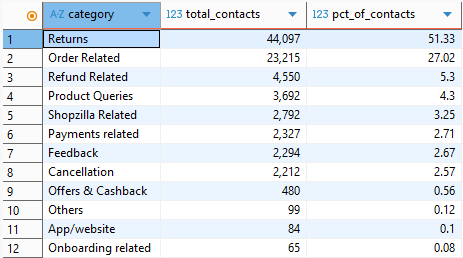
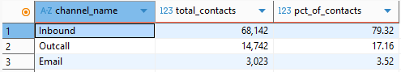
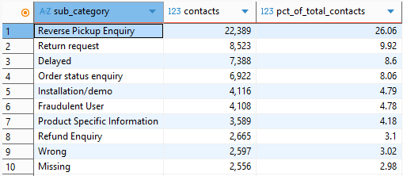
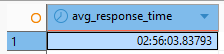

← Back to Portfolio
SQL Analytics Case Study
SQL Customer
Insights
85,907 Support Interactions • PostgreSQL • DBeaver • SQL
A SQL case study analysing customer support interactions to identify
demand drivers, channel usage patterns, response-time performance, and
operational improvement opportunities.
Business Problem
Customer support teams often handle high contact volumes without clear
visibility of what is driving demand. This project uses SQL to identify
the customer issues creating the greatest workload and highlight where
operational improvements could reduce inbound contact demand.
- Which customer support categories generate the highest demand?
- Which support channels do customers use most frequently?
- Which specific issues generate the highest contact volume?
- What is the average customer support response time?
- What operational improvements could reduce support demand?
- 85,907 customer support interactions analysed
- Returns: 51.33% of all contacts
- Order Related: 27.02% of all contacts
- Inbound: 79.32% of all interactions
- Average cleaned response time: 2h 56m
Before analysis, the raw dataset was reviewed, tested, and prepared for use
in PostgreSQL. Python was used to inspect the file structure, validate data quality,
identify import issues, and support debugging before loading the dataset into
PostgreSQL via DBeaver.
Initial testing confirmed that the dataset could be imported successfully and
queried reliably. During analysis, additional validation checks were performed
to identify anomalies, investigate unexpected results, and ensure calculations
were based on accurate data.
This preparation process helped ensure the analysis was built on a clean,
usable dataset and reflected real-world analytical workflows involving data
validation, debugging, and quality assurance.
1. Category Demand
Returns and Order Related enquiries accounted for 78.35% of all customer
contacts, indicating that process improvements in these areas would likely
have the greatest impact on support demand.

2. Channel Usage
Inbound contacts dominated customer support interactions at 79.32%,
suggesting customers primarily sought real-time assistance.

3. Top Support Issues
Reverse Pickup Enquiry was the largest individual issue, generating 22,389
contacts and representing 26.06% of all customer interactions.

4. Response Time Analysis
After excluding invalid records with negative response times, the average
customer support response time was 2 hours 56 minutes.

During response time analysis, several records produced negative response
times. Investigation showed these records contained invalid response
timestamps where the response value defaulted to 00:00 despite being
recorded after the reported time.
To improve accuracy, records with negative response times were excluded
from the final calculation. The cleaned dataset produced an average
response time of 2 hours and 56 minutes.
Returns accounted for 51.33% of all support contacts, while Order Related
enquiries accounted for 27.02%. Together, these two categories generated
78.35% of total customer support demand.
Reverse Pickup Enquiry was the largest individual support issue, generating
22,389 contacts and representing 26.06% of all customer interactions.
Inbound support dominated customer contact, accounting for 79.32% of all
interactions. This suggests customers were primarily seeking real-time
assistance rather than using written channels.
Improve visibility of the reverse pickup process through proactive
customer updates and self-service tracking. Because Reverse Pickup Enquiries
alone accounted for more than one quarter of all contacts, improving this
process could significantly reduce support demand.
Prioritise return-related process improvements, as returns generated over
half of all support interactions. Reducing uncertainty in the returns journey
would likely have the greatest operational impact.